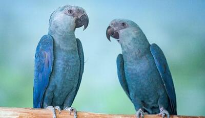

Oito ararinhas-azuis (Cyanopsitta spixii) serão soltas hoje (11) em uma área de preservação ambiental no interior da Bahia. A espécie é considerada extinta na natureza desde o ano 2000, quando desapareceu o último animal selvagem, que era acompanhado por pesquisadores. As aves que serão soltas - cinco fêmeas e três machos - fazem parte de um grupo de 52 trazidas de um criadouro da Alemanha para o Brasil, em 2020, com o objetivo de reintroduzir a espécie na natureza.
“São animais sadios, que têm musculatura de voo, que interagem e que não apresentam comportamento agonístico, isto é, que não brigam com outro. São os animais mais aptos para a soltura”.
As ararinhas-azuis serão soltas com oito araras-maracanã (Primolius maracana), espécie com quem dividia o habitat natural e que tem hábitos semelhantes aos seus. Nos últimos dois anos, as ararinhas passaram por processo de adaptação em um viveiro instalado na cidade de Curaçá, na Bahia, que envolveu a redução do contato com humanos, o convívio com araras-maracanã, o treinamento do voo, o reconhecimento de predadores e a oferta de alimentos que serão encontrados na natureza.

A ararinha-azul foi descoberta em 1819 e sofreu gradual processo de extinção na natureza, devido a fatores como a destruição do ambiente e a captura para o comércio ilegal de animais silvestres. Em 1986, a última população selvagem conhecida tinha apenas três indivíduos. O último indivíduo conhecido, um macho, desapareceu em 2000, decretando-se assim a extinção da espécie na natureza.
A ararinha só não desapareceu por completo porque havia cerca de 50 indivíduos vivendo em criadouros espalhados pelo Brasil e o mundo.
Ainda na década de 90, o governo brasileiro começou um projeto de manejo para reprodução desses animais e a negociação do retorno, para o país, de parte das aves que estavam no exterior.
O Instituto Chico Mendes de Conservação da Biodiversidade (ICMBio) criou, em 2012, um Plano de Ação Nacional (PAN) para aumentar a população cativa, proteger o habitat e promover a reintrodução da ararinha-azul.
Em 2016, o criadouro alemão Association for the Conservation of Threatend Parrots (ACTP) e o ICMBio lançaram o Projeto de Reintrodução da Ararinha-azul, que permitiria a repatriação dos 52 animais quatro anos depois. Hoje, a população mundial de ararinhas é de quase 200 indivíduos, dos quais três nasceram no viveiro de Curaçá
Agência Brasil